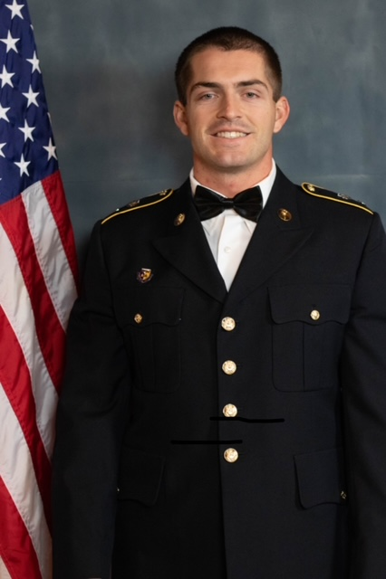

About Me
I am a student at Southern Utah University pursuing a degree in cybersecurity. I enjoy working on hands-on technical projects, team projects, and anything that helps me to build skills that prepare me for any future cybersecurity roles.
I am focused on developing my technical and leadership skills.
Education
Cedar High School
High School Diploma
Southern Utah University
Bachelor of Science – Cybersecurity (in progress)
- Experience with cybersecurity labs, policy writing, and project documentation
- Cybersecurity projects for planning documenting cybersecurity and IT solutions
Skills
- Project Planning & Documentation
- Cybersecurity Fundamentals
- Technical Writing: Policies, Reports, and Status Updates
- Team Collaboration & Communication
- Leadership Skills & Military Related Leadership Characteristics
Contact
- zach.maggio@gmail.com
- Location
- Cedar City, Utah
I am looking for internships, entry-level IT or cybersecurity positions, and any opportunities that help me build real-world experience.